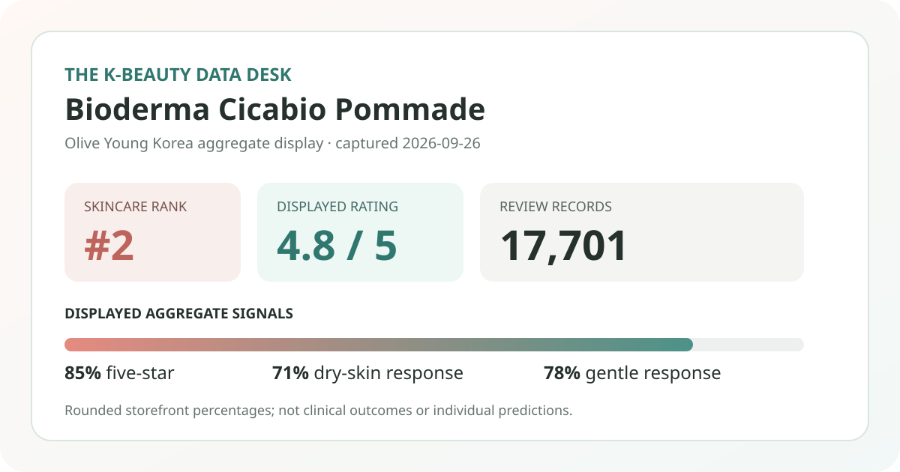
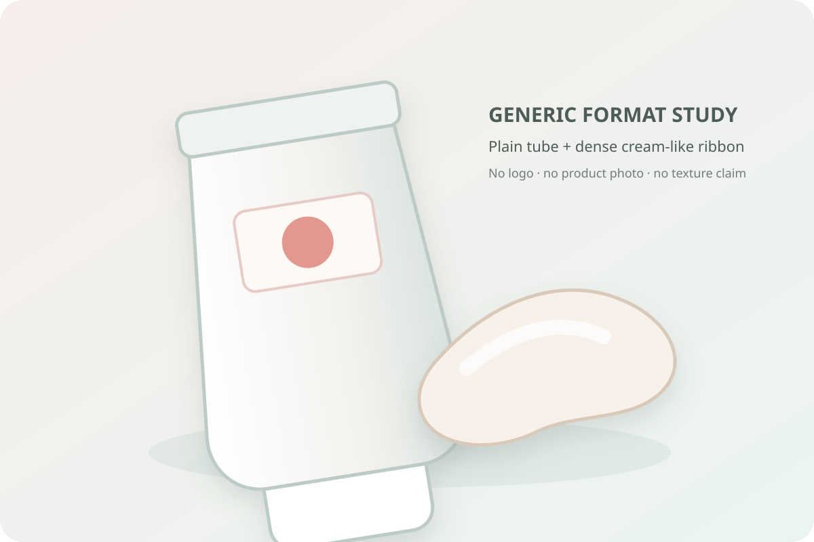

Data captured September 26, 2026. This is an independent analysis of retailer-displayed product information and anonymous aggregate review signals. I did not test the pommade, and no individual review, reviewer identity, product photograph, or user photograph is copied or translated.

The short version: Bioderma Cicabio Pommade appeared at number 2 in the captured skincare sales ranking. Its product summary and review detail agreed on 4.8 out of 5 from 17,701 records. The strongest displayed survey signals were dry skin at 71%, hydration concern at 73%, and a gentle response at 78%.
The displayed distribution is heavily positive, with 85% assigned to five stars and another 10% to four stars. The review base is substantial, so the displayed average is not resting on only a few records. Still, these are rounded storefront shares. Their 100% total does not make them raw data, and they should not be converted into exact counts.
The rating pattern supports a narrow observation: favorable rating selections dominate this retailer's accumulated records for the linked product group. It cannot identify the reasons behind those scores, establish whether the product caused a result, or show how the sample compares with buyers elsewhere. Retailer records may also span related sizes or promotional options, and the page does not independently verify every reviewer identity.
Dry skin was the largest skin-type response at 71%, followed by combination at 26% and oily at 2%. This is best read as the composition of the people who answered the storefront poll. It does not mean 71% of all purchasers have dry skin, nor does it prove better performance for dry skin. The options are self-selected and limited by the retailer's question design.
The concern poll was similarly concentrated: 73% selected hydration, 27% soothing, and 0% wrinkle/brightening. That makes hydration the clearest shopping context in the displayed aggregate. A concern label is not an instrument reading, clinical endpoint, or verified benefit. It says which option respondents chose, not what happened to their skin.
The irritation poll showed 78% gentle, 22% ordinary, and 0% felt irritation after rounding. A displayed zero does not prove that nobody experienced irritation, and 78% gentle does not guarantee tolerance. Personal history, the current regional formula, amount, frequency, other products, environment, and skin condition can all change an individual's experience.

The listing uses the word “pommade,” so the responsible visual choice is a generic tube-and-ribbon format study rather than a claim about this formula. I did not handle or apply the product. I cannot confirm whether it feels waxy, rich, tacky, glossy, occlusive, quick to spread, slow to absorb, scented, or comfortable under sunscreen and makeup.
The local illustration is deliberately brand-neutral and does not reproduce the retailer's product photography or packaging. It communicates only a broad format idea. Anyone whose purchase depends on weight or finish should check a tester, current authorized imagery, or a return policy rather than treating an editorial swatch as evidence.
The captured title described a 100 ml pommade accompanied by three 5 ml items: pommade, cream, and SPF50 cream. Based only on the main 100 ml amount, the ₩28,800 promotional price works out to ₩2,880 per 10 ml. That calculation intentionally assigns no separate value to the companion items because the listing did not price them individually.
Bundle value depends on the option that actually reaches checkout. A large main size may appeal to frequent users, but it can be wasteful if the format does not fit the routine or if a smaller trial would be more sensible. Promotional gifts, price, coupons, stock, packaging, and international availability can change after the capture date.
If skin is actively inflamed, broken, infected, recently treated, or under medical care, retail aggregates should not direct treatment. Follow the current label and qualified advice appropriate to the situation. Stop use if a concerning response occurs and seek help when needed.
The captured product summary and review detail both displayed 4.8 out of 5 from 17,701 records. Rounded star shares were 85% five-star, 10% four-star, 3% three-star, and 1% each for two and one star.
Dry was the largest captured skin-type response at 71%. That describes who selected the poll response, not comparative performance, medical suitability, or a guarantee for dry skin.
No. It is a rounded anonymous retail poll. It cannot predict individual tolerance or establish safety for allergies, eczema, rosacea, acne, wounds, infection, pregnancy, recent procedures, or another condition.
No. It is a local code-drawn format visual, not a product or user photograph and not evidence of the real formula's appearance or feel.
Not necessarily. Those terms were displayed on the capture date. Verify the exact option, gifts, coupons, stock, seller, shipping, and checkout total.
Bioderma Cicabio Pommade was the first valid unpublished product family in the captured skincare ranking, appearing at number two after one already-covered promotional configuration. The ranking and detail titles agreed, the product and review views matched on 4.8 stars from 17,701 records, and the page exposed a useful rounded distribution plus skin-type, concern, and irritation polls.
The data supports a measured conclusion: this is a highly visible, widely reviewed listing whose captured poll respondents leaned dry-skinned, hydration-focused, and gentle in their selected responses. It does not support claims that the product heals, repairs, protects, treats a condition, replaces medical care, or will suit every dry or sensitive user. Use the aggregates to frame questions, then verify the current label, the exact bundle, the real texture, and personal tolerance.
← All K-Beauty Data Desk reviews · Best-seller rankings · Skin-poll representation · About & methodology
The analysis is based on the dated retailer product page captured on 2026-09-26. Open the source listing.
Published by The K-Beauty Data Desk · Aggregate data captured 2026-09-26. No individual review text, name, product photo, or user photo is reproduced or translated. I did not test the product and received no product or payment for this coverage.